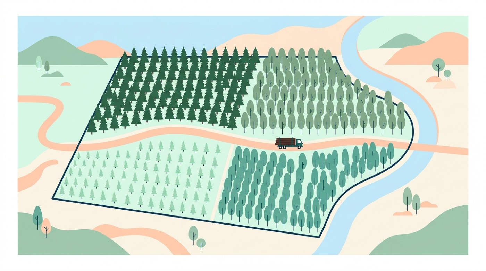

Bases de Datos Aplicada 1•Caso de Estudio: Forestal Bosques del Sur S.A.
{{ current + 1 }} / {{ slides.length }}
TALLER PRÁCTICO GUIADODOCENCIA Caso de Modelado de Base de Datos Relacional
Caso de Estudio: Forestal Bosques del Sur S.A.
Modelado Conceptual Barker y Normalización a 3FN en Oracle SQL Developer Data Modeler
En esta sesión de taller trabajaremos como un equipo de consultoría de datos. Analizaremos los requerimientos operacionales de la empresa, resolveremos las dependencias entre entidades territoriales y operativas, y construiremos paso a paso el modelo lógico en notación Richard Barker hasta generar el esquema relacional en Tercera Forma Normal (3FN).
Patrimonio Territorial & Cosecha
Predios, rodales dependientes, especies y faenas.
Logística, Personal & Protección
Guías de despacho, cuadrillas MERE e incendios.

PREGUNTA DE INICIO
¿Por qué un ingeniero debe comprender la realidad operativa del negocio antes de abrir Oracle Data Modeler?
Fundamentación: La base de datos es la representación formal de las reglas del negocio. Si se malinterpreta la operativa física, el modelo generará anomalías que requerirán costosos rediseños en fases avanzadas.
BLOQUE A · CONTEXTO DE NEGOCIOOBJETIVO Conocer el perfil empresarial, su escala territorial y la problemática actual
Contexto Empresarial y Diagnóstico Operacional
Perfil y Escala de la Organización
Forestal Bosques del Sur S.A. es una empresa agroforestal que administra más de 45.000 hectáreas de plantaciones de Pinus radiata (Pino insigne) y Eucalyptus nitens / globulus en el sur de Chile (Regiones de Los Ríos y Los Lagos).
Cadena operativa: Manejo silvícola por rodales → Faenas de cosecha con empresas contratistas → Despacho en camiones a Aserraderos o Plantas de Celulosa → Protección territorial contra incendios.
Diagnóstico Operacional: Puntos de Dolor
Planillas Excel aisladas: Cada faena reporta en archivos locales. Los volúmenes cortados no cuadran con el inventario de madera en pie.
Guías en talonarios de papel: Despachos manuales con extravío de comprobantes, demoras de semanas en liquidar pagos a transportistas y riesgo tributario.
Coordinación informal de incendios: Emergencias coordinadas por teléfono y correo; no hay registro formal auditable de brigadistas ni horas en terreno.
El Encargo a Ingeniería de Datos:
Diseñar el Modelo Conceptual en Notación Barker en Oracle Data Modeler y transformarlo a un esquema relacional normalizado en 3FN que centralice y audite toda la cadena de valor forestal.
PREGUNTA GUÍA
¿Qué consecuencias informáticas y de negocio genera operar con planillas de cálculo descentralizadas y guías en papel?
Respuesta: Redundancia de datos, anomalías de inserción y modificación, pérdida de trazabilidad maderera y falta de integridad referencial.
BLOQUE A · METODOLOGÍAOBJETIVO Conocer las 5 fases metodológicas del taller de 85 minutos
Estructura Metodológica de la Sesión (85 min)
1. Dominio & Glosario
10 minutos
Apropiación de conceptos forestales (predio, rodal, troza, raleo) para interpretar los requisitos sin ambigüedad.
2. Análisis de Requisitos
15 minutos
Lectura analítica del enunciado: identificación de entidades, atributos, cardinalidades y reglas de negocio.
3. Modelado Barker
35 minutos
Construcción colaborativa en Oracle Data Modeler: entidades fuertes, débiles, subtipos MERE y arcos exclusivos.
4. Transformación & 3FN
15 minutos
Ingeniería al modelo relacional y auditoría formal del cumplimiento de 1FN, 2FN y 3FN en las 19 tablas.
5. Aseguramiento & Cierre
10 minutos
Verificación de la lista de chequeo de 12 criterios de calidad y consolidación de aprendizajes.
PREGUNTA GUÍA
¿Por qué el análisis semántico de requisitos demanda más tiempo y reflexión que el dibujo en la herramienta CASE?
Respuesta: Data Modeler es una herramienta de registro; el razonamiento lógico, la identificación de claves y las restricciones ocurren en el análisis.
BLOQUE A · GLOSARIO DE DOMINIOOBJETIVO Definir los conceptos territoriales y taxonómicos del caso
Glosario Técnico 1: Territorio y Plantaciones
DIVISIÓN TERRITORIAL
Predio
Terreno delimitado propiedad de la forestal. Se identifica formalmente por su Rol SII (ej: 100-1) y pertenece a una única comuna.
Analogía informática: Un campus universitario compuesto por múltiples edificios.
UNIDAD DE MANEJO
Rodal
Subdivisión interna y homogénea del predio con árboles de la misma especie y edad. Se numera secuencialmente (1, 2, 3...) dentro de cada predio.
Analogía informática: Una sala de clases dentro de un edificio específico.
BOTÁNICA & SILVICULTURA
Especie y Turno
Tipo de árbol plantado (ej: Pino, Eucalipto). El turno de rotación es el período mínimo en años que debe crecer antes de cosecharse.
Regla: Tiempo de maduración previo a la autorización de faena.
MÉTRICAS AGRONÓMICAS
Superficie y Densidad
1 hectárea (ha) equivale a 10.000 m². La densidad indica el número estimado de árboles por hectárea (dato no registrado en rodales antiguos).
Atributo opcional: Admite valor nulo en plantaciones históricas.
PREGUNTA GUÍA
Si un predio tiene 4 rodales, ¿puede existir un 'Rodal 2' en otro predio a 80 kilómetros de distancia?
Respuesta: Sí. Por esa razón el número de rodal es un discriminador local y requiere obligatoriamente el Rol del Predio para constituir su identidad.
BLOQUE A · GLOSARIO DE DOMINIOOBJETIVO Distinguir las operaciones de corta, despacho y entrega industrial
Glosario Técnico 2: Operaciones Silvícolas y Logística
EVENTO OPERATIVO
Faena de Cosecha
Operación de corta de árboles en un rodal ejecutada por una empresa contratista. Métodos: Tala rasa (corte total) o Raleo (poda selectiva).
Temporalidad: Registra fecha de inicio obligatoria; término es opcional mientras esté activa.
PRODUCTO FORESTAL
Troza y Clasificación
Tronco talado y cortado a un largo determinado. Se clasifican comercialmente en Troza aserrable (para tablas) o Troza pulpable (para celulosa).
Unidades métricas: Largo en metros (m) y volumen en metros cúbicos (m³).
DOCUMENTO TRIBUTARIO
Guía de Despacho
Documento oficial que ampara el transporte terrestre de la madera desde la faena en terreno hasta las instalaciones del cliente receptor.
Asociación: Vincula origen (faena), transporte (camión/conductor) y destino.
PUNTOS DE ENTREGA
Aserradero vs Planta
Aserradero: produce madera dimensionada. Planta de Celulosa: elabora pasta de papel. Cada viaje abastece exactamente a uno solo.
Una faena iniciada hace dos días y en plena ejecución, ¿debe tener valor en el atributo fecha_término?
Respuesta: No. El campo debe aceptar valores nulos (opcional) hasta que la faena concluya oficialmente en terreno.
BLOQUE A · GLOSARIO DE DOMINIOOBJETIVO Reconocer los roles especializados de personal y la estructura laboral
Glosario Técnico 3: Personal, Cuadrillas y Brigadas
PERSONA JURÍDICA
Empresa Contratista
Entidad externa que provee cuadrillas de operarios, maquinaria forestal o camiones de transporte para los servicios requeridos.
Identificación: RUT de empresa, razón social y contacto telefónico.
ESPECIALIDAD OPERATIVA
Motosierrista
Operario capacitado en el volteo y desrame manual de árboles con motosierra. Requiere registrar su número de certificación técnica.
Subtipo 1 de Trabajador (MERE disjunto).
ESPECIALIDAD LOGÍSTICA
Operador de Maquinaria
Conductor calificado de maquinaria pesada (skidders, cosechadoras) o camiones de carga de trozas. Registra clase de licencia.
Subtipo 2 de Trabajador (Habilitado como conductor de guía).
PROTECCIÓN AMBIENTAL
Brigadista Forestal
Especialista entrenado en prevención y combate de incendios de bosque. Registra la fecha de su último curso de combate de fuegos.
Subtipo 3 de Trabajador (Habilitado para combate de incendios).
PREGUNTA GUÍA
Si un jefe de cuadrilla supervisa a 6 motosierristas, ¿el jefe debe representarse en una entidad separada?
Respuesta: No. El jefe es una persona física trabajadora con RUT y fecha de ingreso; la supervisión se modela como una relación recursiva en la entidad TRABAJADOR.
BLOQUE B · ANÁLISIS DE REQUISITOSOBJETIVO Extraer entidades territoriales y resolver la identificación del Rodal
Requerimientos del Negocio: Territorio y Rodales
Capas de Análisis:
Las regiones se identifican por un Código_Región y tienen un nombre. Las comunas se identifican por un Código_Comuna, tienen un nombre y cada comuna pertenece a exactamente una región.
Un Predio es una propiedad territorial de la empresa; se identifica por su Rol_Predio (asignado por el SII) y registra nombre, superficie total en hectáreas (ha) y la comuna en que se ubica.
Cada predio se divide internamente en uno o más Rodalesnumerados desde 1 dentro de cada predio (el rodal 2 existe en muchos predios; por ende, su identificación requiere Rol_Predio + Número_Rodal). De cada rodal se registra superficie (ha), año de plantación, densidad estimada (árboles/ha; dato opcional en rodales antiguos) y la Especie plantada (Código_Especie, nombre común, nombre científico, turno de rotación).
PREGUNTA GUÍA
¿Por qué 'Comuna' debe estructurarse como una entidad y no como un simple atributo de texto en Predio?
Respuesta: Porque cada comuna se vincula obligatoriamente a una región. Almacenar el nombre de la comuna como texto libre en Predio introduciría dependencias transitivas y violaría 3FN.
BLOQUE B · ANÁLISIS DE REQUISITOSOBJETIVO Identificar la especialización MERE y la relación reflexiva de jefatura
Requerimientos del Negocio: Contratistas y Personal
Capas de Análisis:
Las faenas y traslados son ejecutados por empresas Contratistas (RUT, razón social, teléfono). De cada Trabajador se registra RUT, nombres, apellidos, fecha de ingreso y el contratista al que pertenece.
Cada trabajador puede tener a lo más un jefe de cuadrilla, quien también es un trabajador registrado en el sistema; un jefe puede tener varios trabajadores bajo su supervisión.
Todo trabajador pertenece exactamente a uno de los siguientes tipos especializados (especialización total y disjunta):
• Motosierrista (número de certificación técnica).
• Operador de Maquinaria (clase de licencia de conducir).
• Brigadista (fecha del último curso de combate de incendios).
PREGUNTA GUÍA
¿Qué anomalía de diseño ocurriría si fusionamos los tres roles en una única tabla TRABAJADOR con columnas opcionales?
Respuesta: Se generaría proliferación de valores nulos y el modelo permitiría estados inconsistentes (ej: registrar un brigadista con licencia de camión pero sin curso de incendios).
BLOQUE B · ANÁLISIS DE REQUISITOSOBJETIVO Extraer relaciones de cosecha, transporte y destinos industriales
Requerimientos del Negocio: Cosecha y Despachos
Capas de Análisis:
Una Faena de Cosecha (ID_Faena) se realiza sobre un rodal específico y es ejecutada por un contratista; registra fecha de inicio, fecha de término (opcional mientras esté en curso) y método (Tala rasa o Raleo). Un rodal puede registrar múltiples faenas a lo largo de los años.
La madera cosechada se transporta mediante Guías de Despacho (N°_Guía) que registran fecha-hora de emisión, la faena de origen, el Camión (Patente, capacidad en m³, contratista dueño) y el conductor responsable (debe ser Operador de Maquinaria).
Cada guía se entrega en un único destino: a un Aserradero (Código_Aserradero, nombre, comuna) o a una Planta de Celulosa (Código_Planta, nombre, capacidad), nunca a ambos ni a ninguno.
Una guía transporta uno o másProductos (Código_Producto, descripción). Por cada producto de la guía se registra: largo (m), número de trozas y volumen total (m³).
PREGUNTA GUÍA
¿En qué tabla reside el atributo 'volumen (m³)'? ¿En GUIA o en PRODUCTO?
Respuesta: En la entidad asociativa DETALLE_GUIA, ya que describe el volumen específico de ese producto en ese despacho en particular.
BLOQUE B · ANÁLISIS DE REQUISITOSOBJETIVO Identificar la relación N:M con atributos temporales y reglas de negocio
Requerimientos del Negocio: Protección contra Incendios y Reglas
Capas de Análisis:
Cuando se detecta un Incendio (ID_Incendio) en un predio se registra fecha y hora de detección, fecha y hora de control (opcional mientras continúe activo) y superficie afectada en hectáreas (ha).
En el combate participan varios brigadistas y un brigadista puede combatir en múltiples incendios. Por cada intervención se registra fecha-hora de llegada y fecha-hora de retiro.
Reglas de Negocio Explícitas del Sistema:
1. Capacidad de Transporte: El volumen sumado de los productos en una guía ≤ capacidad nominal (m³) del camión asignado.
2. Maduración del Rodal: Faena permitida solo si: (Año_Faena − Año_Plantación) ≥ Turno_Rotación_Especie.
3. Perfil de Combate: Solo trabajadores de tipo BRIGADISTA pueden registrarse en el combate de un INCENDIO.
4. Habilitación de Conducción: Solo trabajadores de tipo OPERADOR DE MAQUINARIA pueden registrarse como conductores en GUÍA DE DESPACHO.
PREGUNTA GUÍA
¿Cómo garantizamos a nivel de arquitectura de base de datos que jamás se asigne un motosierrista al combate de incendios?
Respuesta: Haciendo que la Foreign Key de PARTICIPACION_COMBATE apunte directamente a la tabla especializada BRIGADISTA y no a la tabla genérica TRABAJADOR.
BLOQUE B · DECISIONES DE DISEÑOOBJETIVO Formalizar supuestos de diseño para asegurar consistencia en el equipo
Matriz de Supuestos de Diseño
1. Unicidad de Producto por Guía
Decisión: Cada producto aparece como máximo una vez en una guía determinada. Por lo tanto, la clave primaria de DETALLE_GUIA es compuesta natural: (numero_guia, codigo_producto).
2. Registro de Combate por Incendio
Decisión: Se almacena un registro por cada brigadista en un incendio específico. Su clave primaria en el modelo relacional es (id_incendio, rut_brigadista).
3. Pertenencia del Conductor
Decisión: El conductor debe ser Operador de Maquinaria según regla de negocio. No se exige como restricción de clave foránea que pertenezca al mismo contratista del camión para dar flexibilidad operativa.
4. Normalización Territorial del Aserradero
Decisión: La comuna del Aserradero referencia a la entidad COMUNA mediante clave foránea, preservando 3FN estricta en el subsistema de destinos.
PREGUNTA GUÍA
¿Por qué es indispensable que el equipo de analistas documente formalmente los supuestos de diseño?
Respuesta: Porque las ambigüedades no resueltas generan discrepancias en la implementación del software y riesgos de integridad en producción.
BLOQUE B · CLASIFICACIÓN CONCEPTUALOBJETIVO Clasificar sustantivos en Entidades Fuertes, Débiles, Asociativas y Subtipos
Inventario y Clasificación de Entidades Candidatas
Entidades Fuertes (7)
REGION
COMUNA
PREDIO
ESPECIE
CONTRATISTA
PRODUCTO
CAMION
Entidades Débiles (1)
RODAL Depende por existencia e identificación de PREDIO
MERE / Subtipos (4)
TRABAJADOR (Padre)
MOTOSIERRISTA
OPERADOR_MAQ
BRIGADISTA
Operación & N:M (6)
FAENA_COSECHA
GUIA_DESPACHO
DETALLE_GUIA
INCENDIO
PARTICIPACION_COMB
ASERRADERO / PLANTA
PREGUNTA GUÍA
¿Por qué RODAL es la única entidad dependiente por identificación de esta lista?
Respuesta: Porque el número de rodal carece de significado global fuera del predio en el que se encuentra. Requiere la clave del predio para identificar una fila inequívoca.
BLOQUE C · HERRAMIENTA OFICIALOBJETIVO Dominar la convención gráfica de Richard Barker en Oracle Data Modeler
Convenciones de la Notación Barker en Data Modeler
Prefijos de Atributos
# : UID Primario (Identificador único).
* : Atributo Mandatorio / Obligatorio (NOT NULL).
o : Atributo Opcional (Permite valor NULL).
Trazos de Relación
Línea Continua (——): Participación Obligatoria (debe existir).
Línea Discontinua (- - -): Participación Opcional (puede existir).
Pata de Gallo: Cardinalidad Muchos (N).
Estructuras Especiales
Barra perpendicular (|): Relación Identificadora (UID bar, entidad débil).
Caja anidada: Subtipos MERE (Jerarquía total y disjunta).
¿Una línea continua en Barker indica que una entidad es débil?
Respuesta: No. La línea continua expresa obligatoriedad de participación. La condición de entidad débil se modela exclusivamente con la barra perpendicular de UID (|).
BLOQUE C · MODELADO EN VIVOOBJETIVO Trazar la jerarquía REGION → COMUNA → PREDIO en Data Modeler
Paso 1: Módulo Territorial (Región, Comuna y Predio)
REGION
# codigo_region
* nombre
1 : N Obligatorio
——————<
COMUNA
# codigo_comuna
* nombre
1 : N Obligatorio
——————<
PREDIO
# rol_predio
* nombre
* superficie_total_ha
PREGUNTA GUÍA
¿Por qué en el diagrama conceptual lógico NO declaramos el atributo 'codigo_comuna' dentro de PREDIO?
Respuesta: En el modelo conceptual lógico las relaciones modelan las asociaciones. Las columnas de Foreign Key se generan automáticamente al realizar el proceso de ingeniería relacional.
BLOQUE C · MODELADO EN VIVOOBJETIVO Configurar la relación identificadora entre PREDIO y RODAL
Paso 2: Modelado del Rodal como Entidad Débil
PREDIO (Padre)
# rol_predio
* nombre
* superficie_total_ha
Identifying (|)
———|———<
Relación Identificadora
RODAL (Entidad Débil)
# numero_rodal
* superficie_ha
* anio_plantacion
o densidad
Configuración en Oracle Data Modeler: Al crear la relación 1:N entre PREDIO y RODAL, acceda a las propiedades de la relación y active la casilla "Identifying". Data Modeler incorporará la barra perpendicular (|) y propagará rol_predio como parte de la clave primaria de RODAL.
PREGUNTA GUÍA
¿Por qué el atributo 'densidad' es el único con prefijo 'o' (opcional) en la entidad RODAL?
Respuesta: Porque el enunciado especifica expresamente que la densidad estimada es un dato desconocido en plantaciones antiguas.
BLOQUE C · CHECKPOINT FORMATIVOEVALUACIÓN Verificar la comprensión de la clave compuesta de la entidad débil
Checkpoint 1: Verificación de la Clave del Rodal
El sistema debe registrar una cosecha en el 'Rodal 2' del predio 'El Roble' (Rol 100-1) y otra faena en el 'Rodal 2' del predio 'Los Coihues' (Rol 200-7). ¿Cuál es la clave primaria (PK) que identifica unívocamente cada rodal en el esquema relacional?
¿Qué error arrojaría el motor de base de datos Oracle si intentáramos definir únicamente 'numero_rodal' como PK al insertar el segundo predio?
Respuesta: ORA-00001: unique constraint violated (violación de restricción de clave primaria duplicada).
BLOQUE C · MODELADO EN VIVOOBJETIVO Asociar ESPECIE a RODAL y RODAL a FAENA_COSECHA
Paso 3: Especies Plantadas y Faenas de Cosecha
ESPECIE
# codigo_especie
* nombre_comun
* nombre_cientifico
* turno_rotacion
1 : N
——————<
RODAL
# numero_rodal
* superficie_ha
* anio_plantacion
1 : N (No Ident.)
- - - - - -<
FAENA_COSECHA
# id_faena
* fecha_inicio
o fecha_termino
* metodo
PREGUNTA GUÍA
¿Por qué la relación de RODAL a FAENA_COSECHA es discontinua (opcional) en el extremo de Rodal?
Respuesta: Porque un rodal recién plantado contiene árboles en etapa inicial de crecimiento y aún no ha registrado faenas de cosecha.
BLOQUE C · MODELADO EN VIVOOBJETIVO Representar la jerarquía de especialización total/disjunta y la jefatura recursiva
Paso 4: Especialización MERE de Personal y Jefatura
TRABAJADOR (Supertipo)Total & Disjunta
# rut
* nombres
* apellidos
* fecha_ingreso
→ Relación Recursiva: Un trabajador puede supervisar a 0..N trabajadores (Jefe opcional).
MOTOSIERRISTA
* numero_certificacion
OPERADOR_MAQ
* clase_licencia
BRIGADISTA
* fecha_ultimo_curso
PREGUNTA GUÍA
¿Por qué los subtipos NO requieren declarar un atributo '# rut' explícito en el diagrama conceptual?
Respuesta: En la notación Barker los subtipos heredan implícitamente el identificador único del supertipo. Al transformarse al modelo relacional, dicho campo actúa como Primary Key y Foreign Key simultáneamente.
BLOQUE C · CHECKPOINT FORMATIVOEVALUACIÓN Evaluar la resolución de relaciones reflexivas y herencia de claves
Checkpoint 2: Verificación de Jefatura y Subtipos
El enunciado indica: "Cada trabajador puede tener un jefe de cuadrilla, que también es trabajador". ¿Cuál es la forma normalizada y correcta de modelar esta regla en el esquema relacional?
¿Por qué la columna 'rut_jefe' debe aceptar obligatoriamente valores nulos?
Respuesta: Porque el nivel más alto de la jerarquía (ej: el administrador general de faena) no tiene a ningún otro trabajador por encima en la estructura de supervisión.
BLOQUE C · DECISIÓN DE DISEÑOOBJETIVO Comparar las dos alternativas para modelar el destino exclusivo en Data Modeler
Paso 5: Destinos Industriales Excluyentes (Arco vs Supertipo)
Alternativa A: Arco Exclusivo (Arc Tool)
En GUIA_DESPACHO se trazan dos relaciones 1:N opcionales hacia ASERRADERO y PLANTA_CELULOSA, agrupadas con la herramienta Arc de Data Modeler.
En SQL: Restricción CHECK (codigo_aserradero IS NOT NULL AND codigo_planta IS NULL) OR (...)
Alternativa B: Supertipo DESTINO
Se define la entidad DESTINO con subtipos ASERRADERO y PLANTA_CELULOSA. GUIA apunta mediante una única FK obligatoria a DESTINO.
Ventaja: Escalable si en el futuro se incorporan puertos de embarque o centros de acopio.
PREGUNTA GUÍA
¿Cuál de las dos alternativas es más directa de representar en Oracle Data Modeler?
Respuesta: La Alternativa A mediante la herramienta 'Arc', ya que Data Modeler genera automáticamente las validaciones DDL de exclusión mutua.
BLOQUE C · MODELADO EN VIVOOBJETIVO Resolver relaciones N:M mediante entidades asociativas con atributos propios
Paso 6: Descomposición de Relaciones Muchos a Muchos (N:M)
DETALLE_GUIA (Asociativa)Resuelve Guía – Producto
# numero_guia (FK)
# codigo_producto (FK)
* largo_m
* numero_trozas
* volumen_m3
PARTICIPACION_COMBATE (Asociativa)Integridad con Brigadista
# id_incendio (FK → INCENDIO)
# rut_brigadista (FK → BRIGADISTA)
* fecha_hora_llegada
o fecha_hora_retiro
PREGUNTA GUÍA
¿Por qué el atributo 'fecha_hora_retiro' es opcional en la participación de un incendio?
Respuesta: Porque mientras el brigadista se encuentre combatiendo en la línea de fuego, su intervención continúa activa y la hora de término no ha ocurrido.
BLOQUE C · CHECKPOINT FORMATIVOEVALUACIÓN Comprobar la integridad referencial en la participación de emergencias
Checkpoint 3: Integridad en Protección Forestal
La regla de negocio indica: "Solo trabajadores especializados de tipo BRIGADISTA pueden registrarse en el combate de un INCENDIO". ¿Cómo se garantiza esta regla a nivel arquitectónico en el modelo relacional?
¿Qué ocurre si la Foreign Key apunta a BRIGADISTA y se intenta registrar el RUT de un operario motosierrista?
Respuesta: El motor Oracle rechaza la operación inmediatamente con la excepción ORA-02291 de violación de integridad referencial.
BLOQUE D · TRANSFORMACIÓN RELACIONALOBJETIVO Ejecutar la ingeniería automática de modelo lógico a modelo relacional
Transformación: De Modelo Lógico a Relacional (Engineer)
1. UIDs → Primary Keys
Cada atributo con prefijo # se convierte en la Primary Key formal de la tabla relacional.
2. Relaciones → Foreign Keys
En relaciones 1:N, la clave primaria del extremo 1 se propaga al extremo N como columna de Foreign Key.
3. Subtipos → Tablas Propias
Cada subtipo genera su propia tabla cuya PK es simultáneamente Foreign Key referenciando al supertipo.
Procedimiento en Oracle Data Modeler: Pulse el botón de las dos flechas azules (o el atajo Ctrl+F4) y haga clic en "Engineer". Verifique que la tabla FAENA_COSECHA haya recibido dos columnas de Foreign Key para referenciar a RODAL.
PREGUNTA GUÍA
¿Por qué FAENA_COSECHA recibe dos columnas de Foreign Key al referenciar a RODAL?
Respuesta: Porque la clave primaria de RODAL es compuesta: (rol_predio, numero_rodal). Toda Foreign Key debe corresponder en número y tipo a la PK de destino.
BLOQUE D · ARQUITECTURA RELACIONALOBJETIVO Examinar el esquema relacional normalizado compuesto por 19 tablas
¿Por qué este diseño cuenta con 19 tablas en lugar de 5 o 6 tablas multipropósito?
Respuesta: Porque cada entidad modela un concepto atómico con una única responsabilidad, garantizando la eliminación de redundancias e inconsistencias operativas.
BLOQUE D · NORMALIZACIÓN FORMALOBJETIVO Auditar el cumplimiento de 1FN y 2FN sobre los datos del caso
Verificación Formal: Primera y Segunda Forma Normal (1FN y 2FN)
1FN: Atomicidad de Atributos
Infracción 0FN: Almacenar en una sola columna de GUIA la cadena: "20 trozas Pino (15m³), 10 trozas Eucalipto (8m³)". Solución 1FN: Cada producto transportado se registra como una fila atómica e independiente en DETALLE_GUIA con valores numéricos puros.
2FN: Dependencia Funcional Completa
En la tabla DETALLE_GUIA (numero_guia, codigo_producto):
El atributo descripcion_producto depende funcionalmente solo de codigo_producto (dependencia parcial). Solución 2FN: Trasladar la descripción a la tabla PRODUCTO.
PREGUNTA GUÍA
¿Una tabla cuya Primary Key está formada por una sola columna puede violar la 2FN?
Respuesta: No. Si la clave primaria es simple (una columna), no existen partes de la clave; por definición cumple 2FN si ya satisface 1FN.
BLOQUE D · NORMALIZACIÓN FORMALOBJETIVO Demostrar la eliminación de dependencias transitivas (3FN)
Verificación Formal: Tercera Forma Normal (3FN)
Dependencia Transitiva en el Módulo Territorial
Considérese la estructura no normalizada: PREDIO (rol_predio, nombre, codigo_comuna, nombre_region)
Impacto de la anomalía: Si una comuna cambia de delimitación o denominación regional, se requeriría actualizar miles de registros en la tabla PREDIO con riesgo de inconsistencia.
PREGUNTA GUÍA
¿Cómo resuelve el diseño propuesto esta dependencia transitiva para cumplir 3FN estricta?
Respuesta: Mediante la jerarquía normalizada: PREDIO → COMUNA → REGION enlazada por Foreign Keys. El nombre de la región existe en una única fila.
BLOQUE D · REGLAS AVANZADASOBJETIVO Identificar qué reglas exceden a las Foreign Keys y requieren Triggers o validación transaccional
Implementación de Reglas de Negocio Complejas
Regla 1: Capacidad de Carga del Camión
"El volumen sumado de los productos en una guía ≤ capacidad del camión." Implementación técnica: Involucra una función de agregación SUM(volumen_m3) sobre múltiples filas de DETALLE_GUIA. Se resuelve mediante un Trigger BEFORE INSERT/UPDATE en Oracle o validación de formulario transaccional.
Regla 2: Turno Silvícola de Rotación
"No iniciar faena si: (Año_Faena − Año_Plantación) < Turno_Rotación." Implementación técnica: Cruza datos entre FAENA_COSECHA, RODAL y ESPECIE al momento de crear la faena. Se programa en la lógica del proceso o mediante un Trigger de validación.
PREGUNTA GUÍA
¿Por qué una restricción CHECK estándar a nivel de tabla no puede validar la capacidad del camión?
Respuesta: Porque una restricción CHECK solo puede evaluar columnas de la fila que se está insertando o modificando; no puede ejecutar subconsultas ni funciones de agregación sobre otras tablas.
BLOQUE E · ASEGURAMIENTO DE CALIDADCIERRE Auditar el modelo final con la lista de 12 criterios de calidad
Control de Calidad: Lista de Verificación del Modelo
Verifiquemos en conjunto los 12 criterios de calidad arquitectónica en Oracle Data Modeler:
{{ item.done ? '✓' : '' }}
{{ item.text }}
Progreso de verificación: {{ completedChecks }} de {{ checklist.length }} criterios aprobados.
Modelo aprobado formalmente en 3FN.